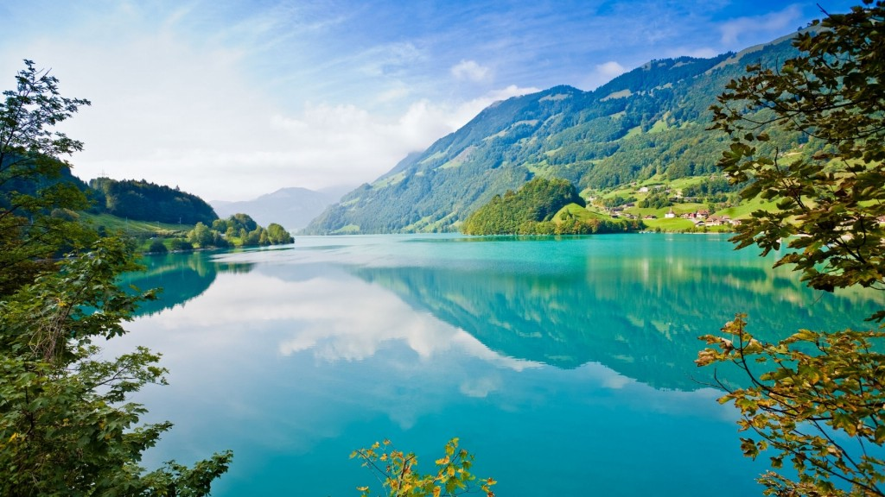

¿Quiénes somos?
Aqualife nació en 2021 con dos objetivos muy claros:
De aquí a 2025, prevenir y reducir significativamente la contaminación marina de todo tipo, en particular la producida por actividades realizadas en tierra, incluidos los detritos marinos y la polución por nutrientes.
De aquí a 2020, reglamentar eficazmente la explotación pesquera y poner fin a la pesca excesiva, la pesca ilegal, no declarada y no reglamentada y las prácticas pesqueras destructivas, y aplicar planes de gestión con fundamento científico a fin de restablecer las poblaciones de peces en el plazo más breve posible, al menos alcanzando niveles que puedan producir el máximo rendimiento sostenible de acuerdo con sus características biológicas.
Para ello, les facilitamos varias secciones en las que podréis estar al tanto las noticias de última hora en cuanto a la vida marina sobre todo en España, una sección de lugares turísticos para aquellos que les interese ir a bucear a distintos lugares o simplemente realizar visitas guiadas en submarinos para enriquecerse en este ámbito y conocer las inmensidades de los océanos. También les mostramos las zonas protegidas y zonas en riesgo por diversas causas como la contaminación y para apoyar la causa te animamos a ayudarnos a construir un mundo mejor. ¡Los océanos son de todos!
Los océanos cubren tres cuartas partes de la superficie del planeta Tierra, y contienen el 99% de la superficie habitable del planeta. Mas de tres mil millones de personas dependen de la biodiversidad marina y costera para su sustento.
Los océanos contienen aproximadamente 200.000 especies distintas, y la pesca marina emplea 200 millones de personas y las aguas costeras se están deteriorando debido a la contaminación y la eutrofización. Se espera que la eutrofización costera aumente en 20 por ciento de los grandes ecosistemas marinos para el año 2050.